Learn
40 treesThe trees of Britain and Ireland — natives, long-established introductions, and the ones you actually meet on a street or a hillside.
Every tree in the guide, with spotting notes, folklore and science.
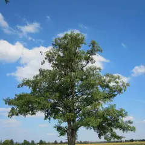
Alder Alnus glutinosa Round leaves with a notched tip; little woody cones Ash Fraxinus excelsior Smooth-edged leaflets; jet-black velvet buds
Ash Fraxinus excelsior Smooth-edged leaflets; jet-black velvet buds 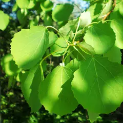
Aspen Populus tremula Round leaves on flattened stalks — never still Beech Fagus sylvatica Silky oval leaves with wavy edges; smooth grey bark
Beech Fagus sylvatica Silky oval leaves with wavy edges; smooth grey bark 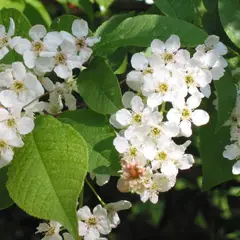
Bird cherry Prunus padus Spikes of many small flowers; bitter black fruit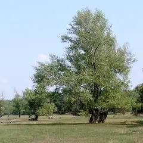
Black poplar Populus nigra subsp. betulifolia Leaning burred trunk; triangular leaves; crimson catkins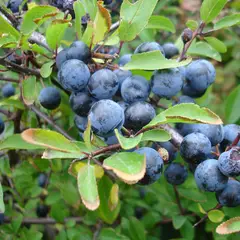
Blackthorn Prunus spinosa Blossom on black bare twigs; savage thorns; sloes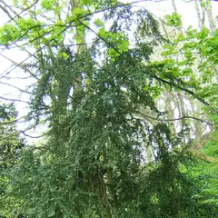
Box Buxus sempervirens Tiny paired evergreen leaves; the densest wood in Europe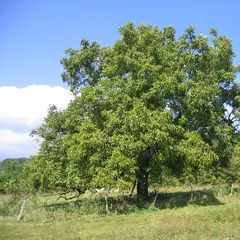
Common walnut Juglans regia Big smooth leaflets smelling of polish; green fruit husks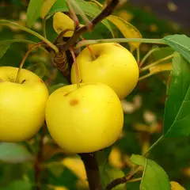
Crab apple Malus sylvestris Pink-white blossom; small hard sour apples- Douglas fir Pseudotsuga menziesii Soft flat needles smelling of grapefruit; three-pronged cones
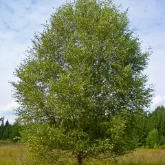
Downy birch Betula pubescens Hairy twigs, duller bark, wetter ground than silver birch Elder Sambucus nigra Ladder leaflets with a strong smell; flat cream flower plates
Elder Sambucus nigra Ladder leaflets with a strong smell; flat cream flower plates  English oak Quercus robur Rounded, wavy lobes; acorns on stalks
English oak Quercus robur Rounded, wavy lobes; acorns on stalks 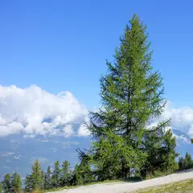
European larch Larix decidua Soft needles in rosettes; a conifer that turns gold and drops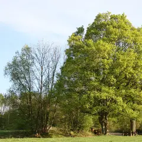
Field maple Acer campestre Small five-lobed leaves with blunt tips; corky twigs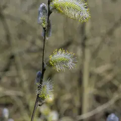
Goat willow Salix caprea Broad grey-woolly leaves; silver catkins in March Hawthorn Crataegus monogyna Small, deeply cut leaves; May blossom; thorns
Hawthorn Crataegus monogyna Small, deeply cut leaves; May blossom; thorns 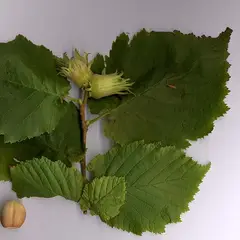
Hazel Corylus avellana Round, soft, hairy leaves; catkins in February Holly Ilex aquifolium Glossy evergreen, spiny below, smooth up high
Holly Ilex aquifolium Glossy evergreen, spiny below, smooth up high 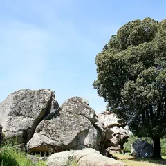
Holm oak Quercus ilex Evergreen oak; grey-felted leaf undersides; acorns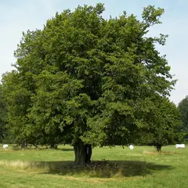
Hornbeam Carpinus betulus Toothed oval leaves; fluted sinewy trunk; winged nuts Horse chestnut Aesculus hippocastanum Fan of 5–7 big leaflets; conkers in autumn
Horse chestnut Aesculus hippocastanum Fan of 5–7 big leaflets; conkers in autumn 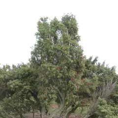
Juniper Juniperus communis Prickly needles in threes; blue-black berries- London plane Platanus × hispanica Camouflage flaking bark; bobble fruit on strings
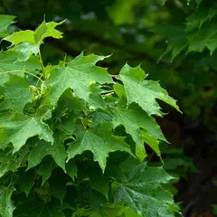
Norway maple Acer platanoides Big five-lobed leaves with hair-fine tips; flat wings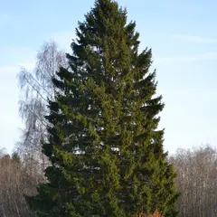
Norway spruce Picea abies Sharp single needles all round the twig; hanging cones Rowan Sorbus aucuparia Ladder-like leaflets, toothed; scarlet berries
Rowan Sorbus aucuparia Ladder-like leaflets, toothed; scarlet berries  Scots pine Pinus sylvestris Long blue-green needles in pairs; orange upper bark
Scots pine Pinus sylvestris Long blue-green needles in pairs; orange upper bark 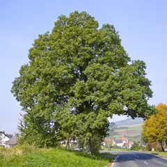
Sessile oak Quercus petraea Lobed leaves on a long stalk; acorns with no stalk Silver birch Betula pendula Small triangular leaves, doubly toothed; white bark
Silver birch Betula pendula Small triangular leaves, doubly toothed; white bark 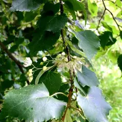
Small-leaved lime Tilia cordata Heart-shaped leaves with rusty tufts beneath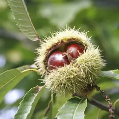
Sweet chestnut Castanea sativa Long saw-toothed leaves; spiny burrs of edible nuts Sycamore Acer pseudoplatanus Hand-shaped five-pointed leaves; helicopter seeds
Sycamore Acer pseudoplatanus Hand-shaped five-pointed leaves; helicopter seeds 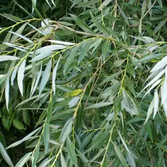
White willow Salix alba Long narrow silvery leaves; riverside tree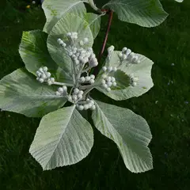
Whitebeam Sorbus aria Leaves brilliant white beneath; red berries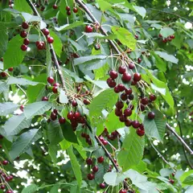
Wild cherry Prunus avium Glossy toothed leaves; banded shiny bark; white blossom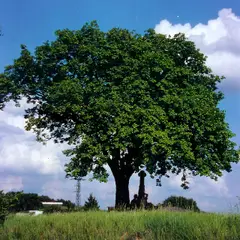
Wild service tree Sorbus torminalis Maple-like lobed leaves; brown speckled fruit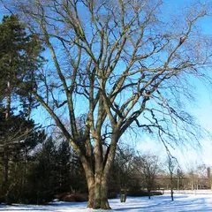
Wych elm Ulmus glabra Big rough asymmetric leaves; papery seed discs Yew Taxus baccata Flat dark needles in two rows; red arils
Yew Taxus baccata Flat dark needles in two rows; red arils